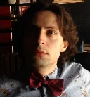

My name is Artyom Peysakhovsky. I'm a researcher and machine learning enthusiast from St. Petersburg.
I hold a master's degree in Computational Physics and a bachelor's degree in Physics.
In addition to my work in quantative analysis, I teach and consultate on Machine Learning and what is usually called Data Science (since 2017). Usually I don't help students with their assignments and prefer to deal with people genuinely interested in the subject — as opposed to simply wanting to get rid of some college homework, etc. — I mean those who want to learn — or at least familiarize themselves with — applied AI, machine learning, neural networks and the underlying mathematics. I do enjoy making difficult concepts interesting and understandable, and I suppose I'm good at finding personal and appropriate examples and clear explanations for each student.
I offer one-on-one tutoring over Skype for:
- Neural networks (classical, convolutional, recurrent)
- Deep Learning with Python
- Python and Machine Learning
- Classical machine learning algorithms (and the related mathematical theory) - Linear regression, logistic regression, SVM, etc.
- Intro to Data Science with Python
- Practical Machine Learning: Python (also C, C++, Java), TensorFlow, Keras, sklearn, nltk, numpy
- Image recognition using Python and OpenCV, dlib, etc.
- Machine learning for data analysis
- Natural Language Processing
- All levels, even for those who want to get basic ideas used in applied Artificial Intelligence, neural network and machine learning without having to use mathematics (only the very basics). And, of course, we can delve deeper into the code, proofs and equations.
We can use the programming language you are most familiar with, e.g. Python, C, C++, Java, JavaScript, etc.
Remote lessons
Unexpectedly, Skype lessons turned out to be much more convenient than I'd expected, and now I think that sometimes they are more suitable for teaching programming and machine learning than conventional tutoring. Although, this is only the case if 1)Both I and my student have broadband Internet 2)A webcam 3)I use a graphic pad and an electronic whiteboard 4)A screen sharing software.
Prerequisites
Being interested and curious, probably some calculus but it's not mandatory
Skype: apesakh
WhatsApp: +79117068745